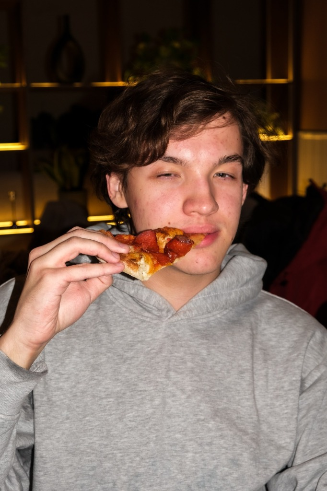
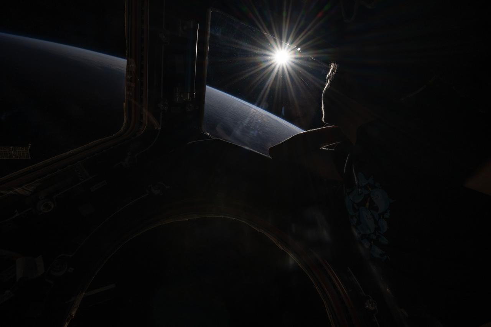
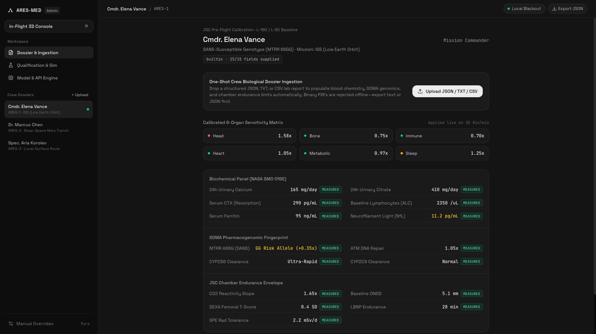
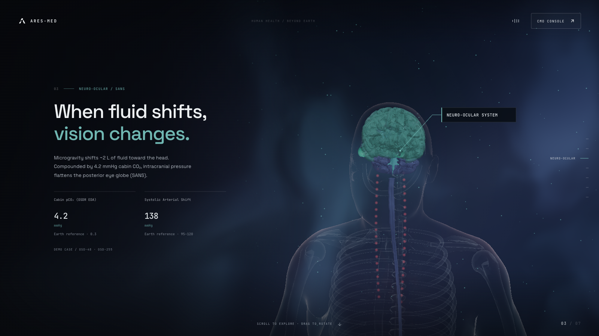
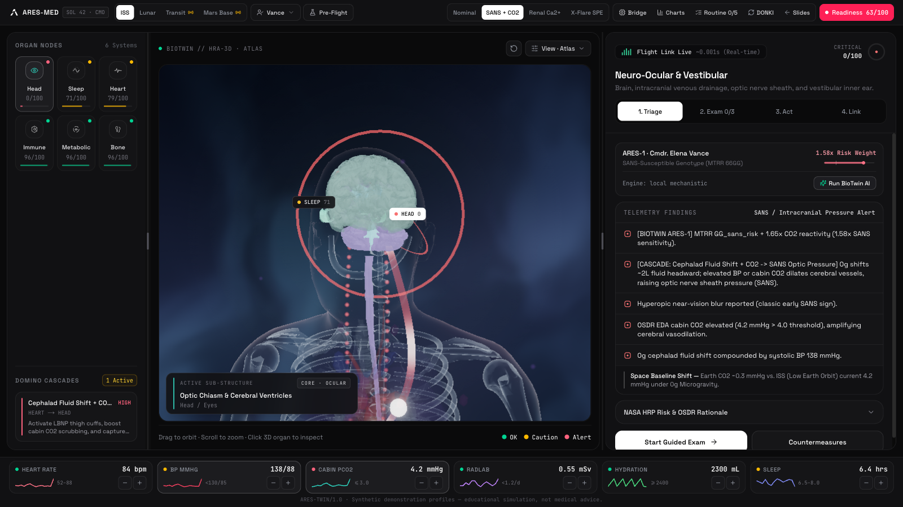
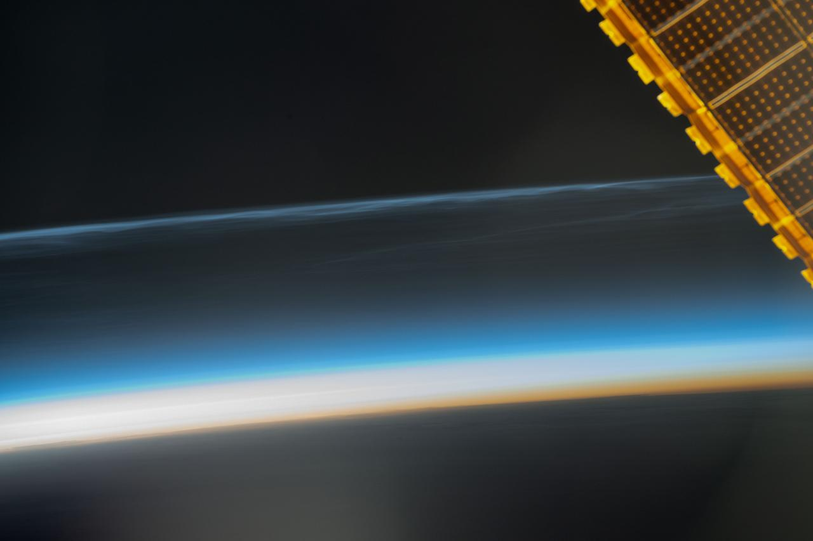

NASA SPACE APPS 2026
ARES-MED OS
Offline digital-twin health software for astronauts on deep-space missions.
Create Health Monitoring Software for Astronauts on Space Missions

Alexei Karpov
02 // WHY IT MATTERS
NO REAL-TIME
EARTH BACKUP
At Mars distance, radio signals take up to 14m 20s each way. In an emergency, crews cannot wait half an hour for Earth doctors.
03 // STEP 1 · BEFORE LAUNCH
PERSONAL
PRE-FLIGHT TWIN
Zero gravity breaks normal Earth lab ranges. Before launch, each astronaut calibrates a personal twin in the Pre-Flight Lab.
-
01
Blood & Renal Labs Personal mineral and kidney baselines
-
02
Genetic Sensitivity Flags drug and vision pressure risks early
-
03
6-Organ Tuning Adjusts alert thresholds per crew member

04 // STEP 2 · IN FLIGHT
SIX CONNECTED
BODY SYSTEMS
Space hazards trigger chain reactions across organs. Pick a flight state to watch how stress propagates live.
Oxygen, blood pressure, hydration, and radiation stay inside healthy spaceflight baselines.

05 // STEP 3 · CMO CONSOLE
AUTONOMOUS
CARE IN ACTION
When an alert hits, the console guides crew from detection to full recovery in three plain steps.


06 // OPEN DATA & TECH
GROUNDED IN
NASA SCIENCE
Every alert and threshold runs 100% offline inside the browser using open space-agency research.
- NASA HRP & OSDR Spaceflight medical risks & astronaut physiology datasets
- NASA DONKI Solar flare & deep-space radiation event alerts
- CSA Physiology Wearable biometric streams & radiation tolerances
- NIH HuBMAP Interactive 3D human organ geometry
07 // VERIFIED & READY
BUILT FOR
MARS TRANSIT
Three connected screens working seamlessly offline—tested end-to-end before launch.